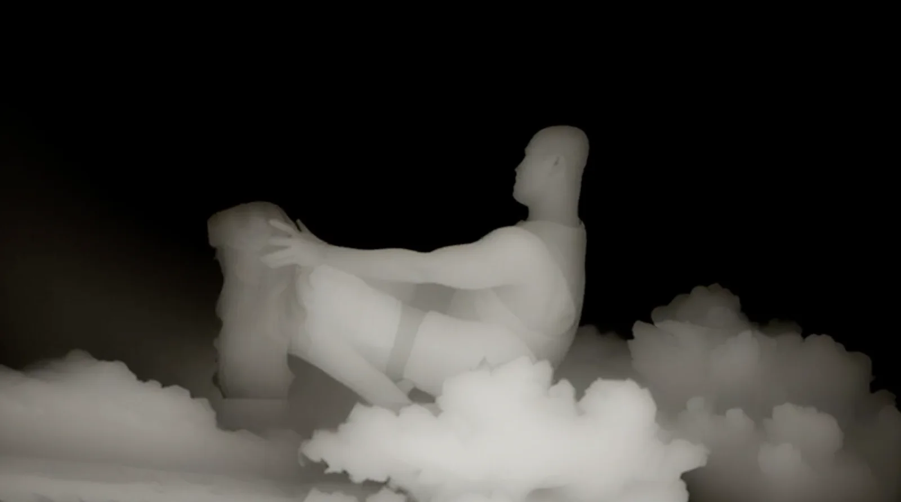

Lenovo · It’s Gonna Be a Good Good Summer
Lenovo Yoga / Snapdragon X Elite · 2024
Участие в команде анимации фильма Пола Трилло.
It’s Gonna Be a Good Good Summer — фильм Пола Трилло и makeitrad, созданный при поддержке Lenovo Yoga и Snapdragon X Elite. В нём танец переходит в сгенерированные сцены с облаками и меняющимися формами.
Я участвовал в дополнительной анимации. В титрах указан под именем StLaurentJr, в разделе Additional animation support.
Танец и хореография
В фильме снялись HOK (Хокуто Кониси) и Эрика Кляйн (Erica Klein). HOK — танцовщик, хореограф и сорежиссёр фильма; Эрика Кляйн — танцовщица и хореограф.
Их снятые на камеру движения стали основой сцен, в которых танец превращается в облачные фигуры.
Кадры и рабочие материалы


